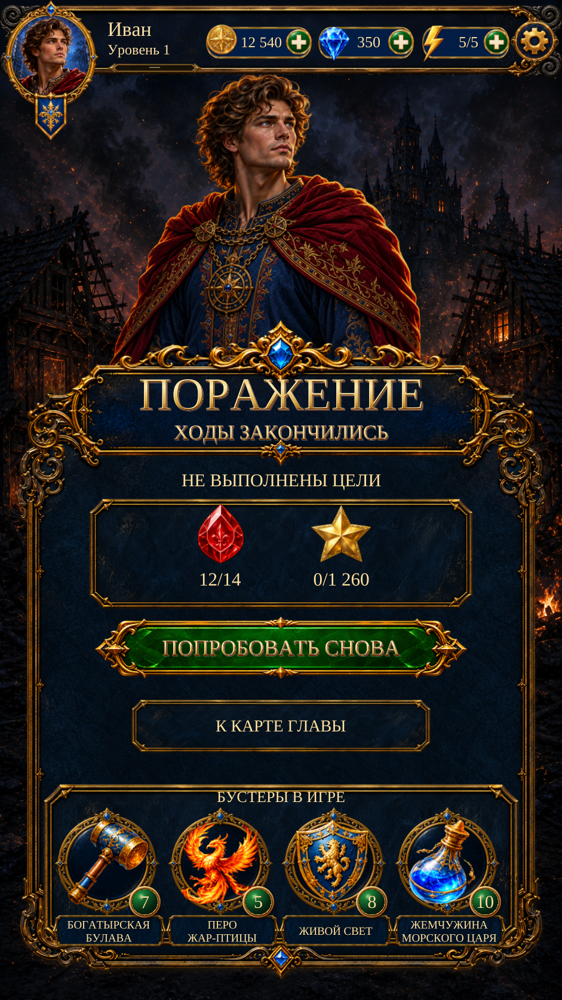

Page 09 — «Поражение» · R2
Scenario-painted Ivan and ruined village, ornate navy-and-gold title and panels, slim emerald retry button, framed boosters and live text. Existing retry/chapter-map actions retained as requested.

One portrait at a time. Runtime uses independent sprites, live text and native controls. You selected existing retry and chapter-map actions in place of the reference’s paid/ad offers. Actual goals, player values and current booster names/artwork remain. Visual acceptance and exact reference fidelity are not assumed. No physical Android test.